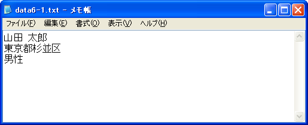
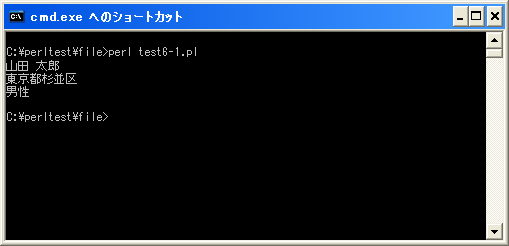

「<」モード(読み込み)
「open」関数を使ってファイルを開く際に、どのような目的で利用するのかをモードで指定することが出来ます。例えば読み込み専用でファイルを開いたり、読み書き両方の使用のためにファイルを開いたりすることが出来ます。ここからは各モードを順に試していきます。
まず最初に「<」モードを試してみます。このモードの場合は読み込み専用でファイルを開きます。書式は次のどちらかを使用します。
open(ファイルハンドル, "< ファイル名"); open(ファイルハンドル, "<", "ファイル名");
引数を2つ使う場合にはファイル名の前に「< 」を付けます。引数を3つ使う場合には2番目の引数に「<」指定し、3番目の引数にファイル名を指定します。なおモードを省略した場合にはこのモードとなります。
「<」モードの場合は次の通りです。
・読み込み専用 ・ファイルが存在していた場合、ファイルを開いた時にファイルの内容を変更しない ・ファイルが存在してなかった場合、エラー
実際には次のように記述します。
open(DATAFILE, "<", "data.txt") or die("error :$!");
この場合、「data.txt」と言うファイルを読み込み専用で開きます。
サンプルプログラム
では簡単なプログラムで確認して見ます。
use strict;
use warnings;
use utf8;
use open ":utf8";
binmode STDIN, ':encoding(cp932)';
binmode STDOUT, ':encoding(cp932)';
binmode STDERR, ':encoding(cp932)';
open(DATAFILE, "<", "data6-1.txt") or die("Error:$!");
while(my $line = <DATAFILE>){
chomp($line);
print "$line¥n";
}
close(DATAFILE);
上記を「test6-1.pl」の名前で保存します。保存する時の文字コードは「UTF-8」として下さい。
今回はカレントディレクトリに「data6-1.txt」と言うファイルを用意します。ファイル内には次のように記述を行います。ファイルの文字コードはUTF-8(BOM無し)に設定してあります。

コマンドプロンプトを起動し、プログラムを保存したディレクトリに移動してから次のように実行して下さい。

今回のサンプルではファイルの内容を読み込み画面に表示しています。
( Written by Tatsuo Ikura )

著者 / TATSUO IKURA
初心者～中級者の方を対象としたプログラミング方法や開発環境の構築の解説を行うサイトの運営を行っています。